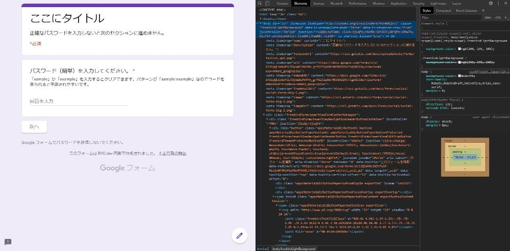

依頼内容
Google フォームに関する以下の内容について、Skypeによるレクチャーを依頼されました。いわゆるオンライン授業ですね。
- 基本機能の使い方
- 簡易ログインの実装方法
- 回答に応じて質問を表示する方法
- 回答者が自分の回答を修正する方法
- 公開方法（Googleログインを要求されないように）
- 回答をcsv形式で出力（文字化けしないように）
- Google サイトへの埋め込み方法
実際の取り組み
依頼主さんに画面を共有していただきました。僕の説明を聞いて依頼主さんが自ら操作をし、上の要件を満たすフォームを作っていただきました。
レクチャー内容について具体的に説明します。
なお、レクチャーした内容とGoogle フォームのヘルプページが被っているところは、ヘルプページへのリンクのみの記載とさせていただきます。
- 基本機能の使い方
- フォームのタイトルや説明の表示場所、質問の作り方、ラジオボタンとチェックボックスの使い分け方、記述式と段落の使い分け、質問の複製・移動・削除の方法をレクチャーしました。
- 簡易ログインの実装方法
以下の機能を組み合わせることで、簡易的なログイン機能を作れます。
簡易ログインのサンプルです。
フォームに入った回答者はまず、パスワード入力セクションに直面します。回答者はある決まったパターンの文字列を入力したら次のセクションに進むことができます。
ただ、この簡易ログインはセキュリティがゆるゆるです。なぜなら、回答者はGoogle フォームのソースコードを見て、作成者がどんなパターンを指定したのかを簡単に確認することができるからです。
 フォーム作成者はパスワードのパターンを正規表現で指定します。つまり、正規表現に関する知識があれば、ソースコードからパターンを確認し、パターン通りの文字列を入力することで突破できてしまいます。
ソースコードの確認方法と正規表現の読み方はググれば出てきます。ソースコード上のどこにパターンが書いてあるのかもすぐ分かります。誰にでも突破できます。
- 回答に応じて質問を表示する方法
- 例えば、最初の質問でイヌ派かネコ派か聞き、イヌ派と答えた人にはイヌの好みを深掘りするセクションへ、ネコ派と答えた人にはネコの好みを深掘りするセクションへ移動する、という感じのフォームの作り方をレクチャーしました。作り方はこちら。
- 回答者が自分の回答を修正する方法
方法については、回答者に回答の編集を許可するセクションをご覧ください。
すべての質問への回答が終わると、「回答を編集」リンクが表示されます。そのURLに入ると回答を編集できます。
- 公開方法（Googleログインを要求されないように）
Googleへのログインを求められるのは、回答の送信を1回に制限する場合、もしくは、回答者がファイルをアップロードする場合のどちらかです。
- 回答をcsv形式で出力（文字化けしないように）
- Google サイトへの埋め込み方法
- Google サイトにGoogle フォームを埋め込む方法はこちら。
料金
2000円／1時間 × 5時間 = 10000円
フィードバック
ご意見やお聞きしたいことがございましたら、TwitterのDMかメールにご連絡ください。